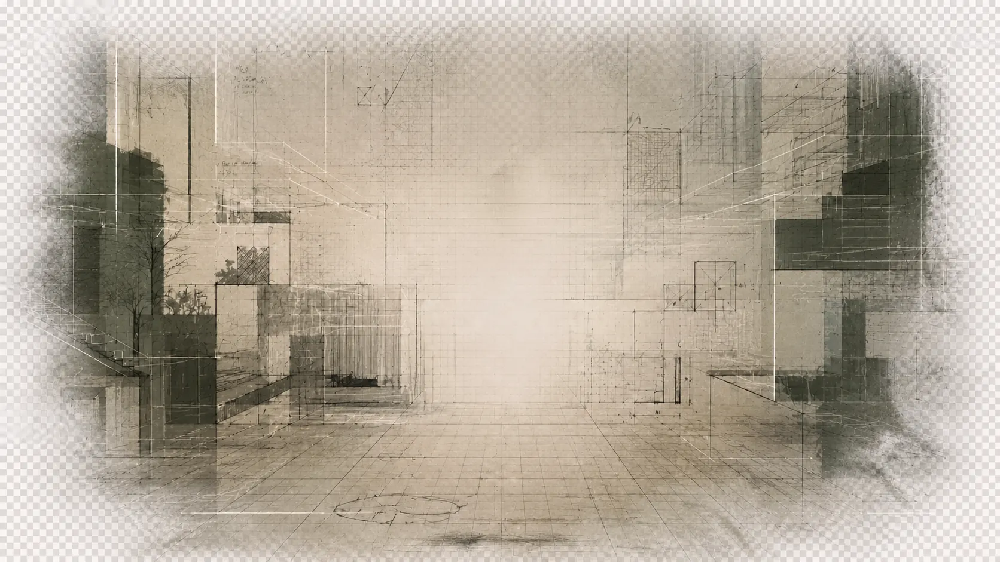
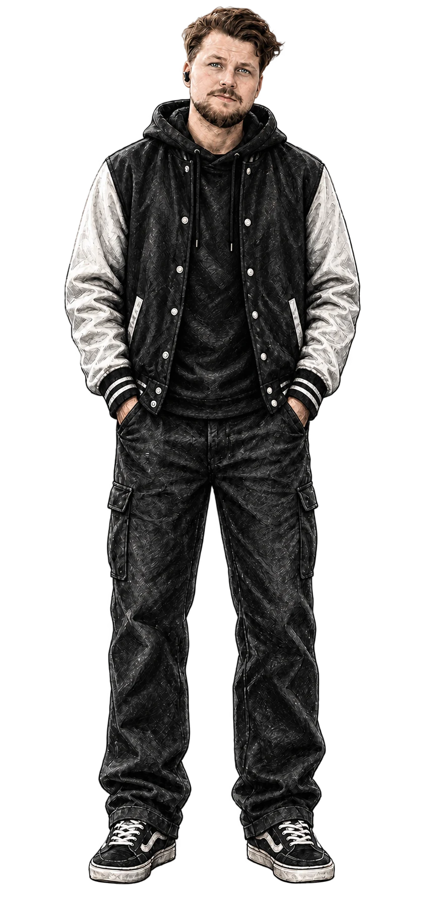

Spelmekanik
Regler och interaktioner som tillsammans skapar spelets grundläggande system.

PONTUS JOELSSON / EXPERIENCE DESIGNER

Praktiskt tänkande, mänsklig förståelse och digital form.
01 / OM MIG
Min styrka ligger i kombinationen av praktiskt hantverkstänk och en djup förståelse för människor. Erfarenheter från snickeri, kundservice och ledarskap har lärt mig att se både detaljerna och helheten.
På Futuregames förvandlar jag insikter till digitala lösningar. För mig är design ingen ytfinish, utan strukturer som fungerar i verkligheten och håller över tid.
Något tydligt, användbart och meningsfullt.
FILTRERA PROJEKT
Visar 3 av 13 projekt
02 / PROJEKT
Case inom research, UX/UI, tjänstedesign, speldesign och konceptutveckling.
UX Research · WCAG · E handel
Tre testomgångar för en tydligare, mer tillgänglig tapetupplevelse.
↓ 02UX/UI · Information Architecture · Testing
Från en vägg av text till en relevant och motiverande lärplattform.
↓ 03LAB · GRUPPROJEKT · SPECULATIVE DESIGN
Shared Dreamscape · Framtidens kollektiva upplevelser.
↓ 04UX Research · Web · Tillgänglighet
En tydligare webbupplevelse för självskattning, medlemsstöd och vardagliga ärenden.
↓ 05Service Design · Customer Journey
Hur en försening blir en dominoeffekt genom hela leveranskedjan.
↓ 06Business Design · Community · Game Concept
Ett fiktivt spelkoncept där community, rättvis monetisering och retention formar produktriktningen.
↓ 07GA4 · Heuristic Review · Conversion
En GA4- och UX-analys av var användare tappar fart i e-handelsresan.
↓ 08Viilike · UI · Prototyping · User Testing
Ett verkligt uppdrag för Viilike: en app som barn kan använda och föräldrar känna sig trygga med.
↓ 09Strategy · Research · Concept
Ett fiktivt mediekoncept för att göra ett värderingsdrivet mediehus relevant för yngre målgrupper.
↓ 10Experience Design · Journey Mapping
Hela biobesöket, från första filmsuget till resan hem.
↓ 11User Research · Interview · Insight
Vad känner bilister inför parkeringssituationen i Stockholm?
↓ 12Frontend · UI · Responsive Design
Från wireframe till en responsiv portfoliosida i kod.
↓ 13Game Mechanics · Player Experience · Playable Prototypes
Meningsfulla val, tydliga core loops och spelbara upplevelser. MYKO är det första spelet.
↓Speldesign handlar om mer än regler och grafik. Kursen utforskar hur mekaniker, val och återkoppling formar spelarens beteende, upplevelse och vilja att fortsätta.
Regler och interaktioner som tillsammans skapar spelets grundläggande system.
Beslut där spelaren förstår alternativen och upplever att valet faktiskt spelar roll.
Balansen mellan utmaning, förmåga, belöning och viljan att försöka igen.
Tutorials och återkoppling som lär ut spelet genom handling istället för långa instruktioner.
Sektionen växer med kursen. MYKO är spel 01 och nästa spel får en egen del med samma fokus på mekanik, spelarupplevelse och reflektion.
MYKO är ett 2D-plattformsspel i en varm skogsvärld. Spelaren utforskar miljön genom rörelse, stegar, dubbelhopp och interaktioner med stugan och ficklampan. Klicka i spelområdet för att börja.
Fungerar inte spelet här? Öppna MYKO i en ny flik ↗
04 / FÄRDIGHETER
Jag kombinerar UX metoder med praktiskt problemlösande, ledarskap och en vana att möta människor där de befinner sig.
Intervjuer, observation, användartest, analys, kundresor och insiktsarbete.
Informationsarkitektur, wireframes, prototyper, UI och tillgänglighet.
Facilitering, lagledning, kommunikation och tvärfunktionella team.
Prompting, konceptvisualisering, idéutveckling och snabbare prototyparbete.
Futuregames Experience Designer, 2025 till nu
Telenor Shift Lead och kundservice, 2019 till 2025
Praktiskt hantverk Snickare med känsla för material, människor och hållbara lösningar
05 / MUSIK / UTANFÖR DESIGNEN
Musiken är en annan del av mitt skapande, ett sätt att arbeta med rytm, känsla och berättande. Samma byggstenar följer med in i hur jag formar digitala upplevelser.
ÖPPNA ARTISTSIDAN PÅ SPOTIFY ↗